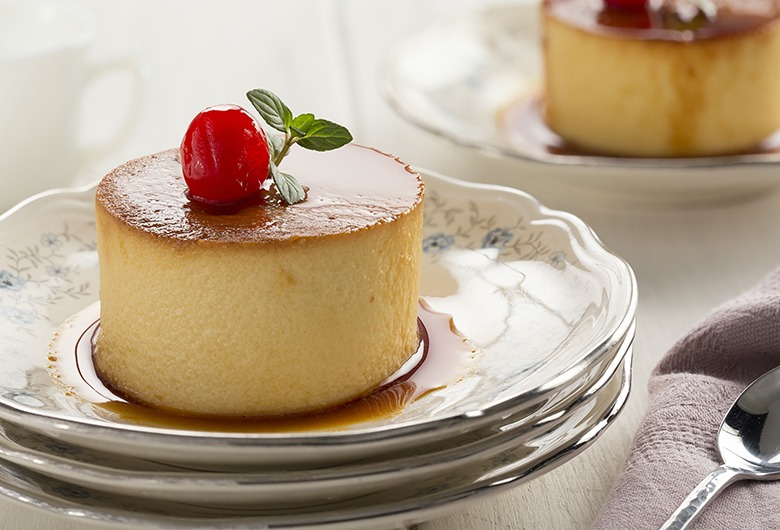

Spanish Dessert Recipes
Flan De Queso

This flan de queso is perfect for the holidays!
This recipe is super easy to make, all it does require
is a bit of time, and patience.
Ingredients
- 1 (14 ounce) can sweetened condensed milk
- 1 (12 fluid ounce) can evaporated milk
- 6 large eggs
- 1 (8 ounce) package cream cheese, softened
- 1/3 cup 2% milk
- 1 teaspoon vanilla extract
- 1 cup white sugar
Steps
- Preheat the oven to 350 degrees F (175 degrees C).
- Place sweetened condensed milk, evaporated milk, eggs,
cream cheese, milk, and vanilla extract in a blender; blend until smooth.
- Place sugar in an even layer in a saucepan over medium heat. Cook until the edges
start to brown, about 1 minute; drag sugar into the center with a spatula once the
edges start to brown. Continue cooking, stirring from time to time, until caramel
is an even golden brown, 4 to 5 minutes.
- Meanwhile, pour 1 inch boiling water into a large oven-safe pot or baking dish to
make a water bath.
- Pour caramel into a 9-inch flan mold or baking pan; swirl so that caramel
reaches 1 inch up the sides. Pour the condensed milk mixture on top. Set
in the water bath.
- Set the flan and water bath in the preheated oven; bake until a damp table knife
inserted into the center comes out clean, 45 minutes to 1 hour. Remove from the
oven and let stand for 5 minutes.
- Chill flan in the refrigerator until firm, 2 to 3 hours. Invert onto a serving
plate so that caramel is on top.
You'll need a flan mold or some sort of deep baking pan to make a typical
flan!